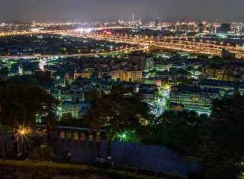
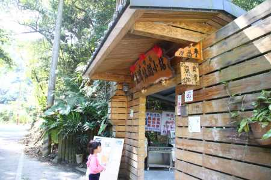
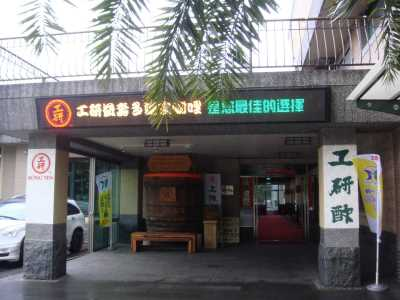
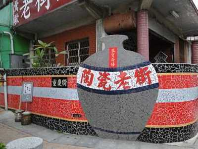
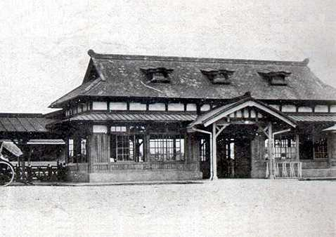
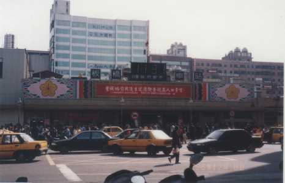
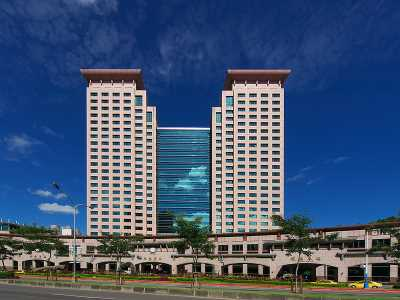

關於新北
INTRODUCE
新北市位於台北盆地，人口數量居全台之冠，境內環繞台北市及基隆市，形成大台北都會區生活圈，而新北市交通非常方便，密集的捷運、公車路網及班次能夠快速又方便的到達目的地，甚至可以說，到新北市旅遊不必開車，只要搭乘各類的大眾運輸工具，就可以到達任何地方。
近幾年隨著產業翻新、科技升級，新北市的現代化程度及國際競爭力也逐漸與日本東京、美國紐約、英國倫敦等一流世界大城齊頭並進。在文化方面，新北市也保留了許多古蹟與老建築，像是在板橋區，高樓林立中卻隱藏著光緒年間落成的林本源園邸，園內建有「觀稼樓」、「汲古書屋」、「來青閣」等，是現今難得一見的閩式建築，更是臺灣四大名園之一。
新北市不只透過各式的翻新與升級，讓「未來」變得更好之外，也透過古蹟與老建築的保存，讓「過去」能夠流傳，同時兼顧兩個不同的重點之處。
私房新北
SECRET
五股水碓觀景公園

新店直潭小站

淡水酢益壽多文化館

三芝伊亞餐廳
鶯歌陶瓷老街

新北小故事
HISTORY

板橋橋火車站

在光緒年間就已經存在的板橋火車站，原為木頭及瓦片所建成，國民政府來台後，於1951年後將站房改為磚造。

木造站房改為磚造後，在這時舊板橋站就已相當繁榮，各行各業店面林立，形成相當熱鬧的商圈，此商圈主要是以服飾及餐飲業為主，也是商業及金融中心，同時配合著北迴鐵路的交通調度需求，政府甚至於板橋酒廠後方設置板橋站客車調度場。

在2000年後新板橋車站的落成，周邊地區經重新規劃形成所謂的「新板特區」，帶動整個區域的快速發展，除了周邊興建許多大樓，也鄰近新北市政府，甚至高鐵站與捷運站也近在咫尺，儼然成為一個至關重要的交通樞紐。


聯絡我們
CONTACT


※頁面上些許照片取自google，如有版權問題歡迎隨時聯絡，必定盡力配合，感謝。
© Copyright c-week.elebymax.net 2016